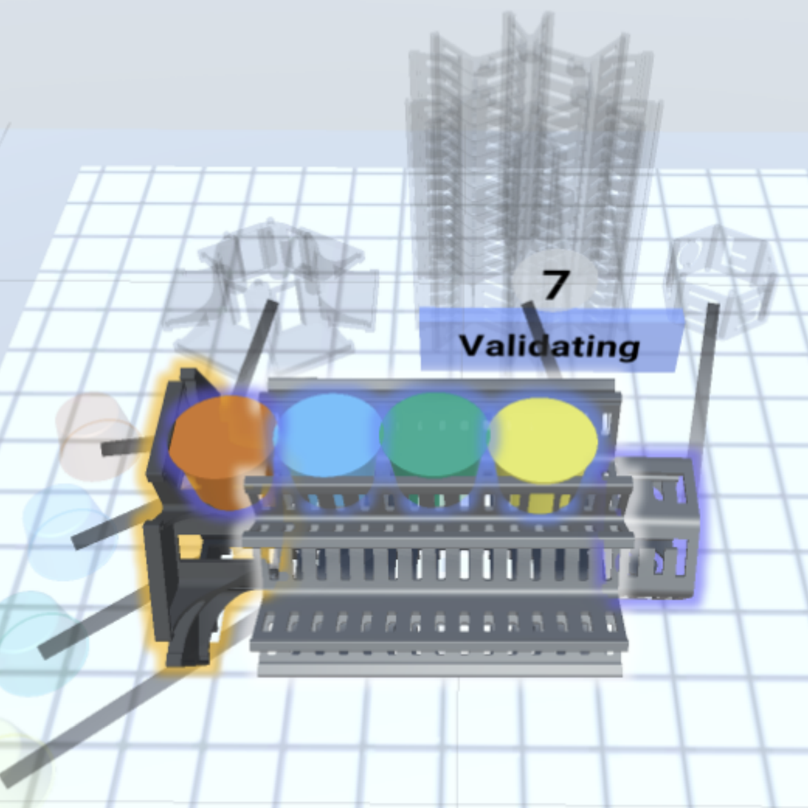

Hi, there! I am an undergraduate major in Computer Science at Columbia University/City University of Hong Kong. I am fortunate to be advised by Prof. Shuran Song at Columbia Artificial Intelligence and Robotics (CAIR) Lab. Before that, I was also priviliedged to be advised by Prof. Minming Li on Algorithmic Game Theory.
When I'm not debugging my code, I enjoy traveling🏙, swimming🏊🏻, and photography🎬 : )
News
Click to expand
- 2023-05-18: I started working at the Columbia Artificial Intelligence and Robotics Lab and the Computer Graphics and User Interfaces Lab
- 2022-11-19: My first paper got accepted to AAAI 2023
Publications

Asynchronously Assigning, Monitoring, and Managing Assembly Goals in Virtual Reality for High-Level Robot Teleoperation
Shutaro Aoyama, Jen-Shuo Liu, Portia Wang, Shreeya Jain, Xuezhen Wang, Jingxi Xu, Shuran Song, Barbara Tversky, Steven Feiner
Conference on Virtual Reality and 3D User Interfaces (IEEE VR) 2024 Orlando, Florida
Education
- Joint Bachelor's Degree Program
- B.A. in Computer Science at Columbia University, 2024 (expected)
- GPA: 4.23/4.00
- B.S. in Computer Science at City University of Hong Kong, 2024 (expected)
- GPA: 4.20/4.30
Honors and Awards
- JC Scholar: The Hong Kong Jockey Club Scholarship
- Peter K. Bloch Scholarship
- AAAI-23 Student Scholarship
- Columbia University GS Dean’s Scholarship
- YEUNG Kin Man Scholarship for CityU-ColumbiaU Joint Bachelor’s Degree Program
- Dean’s List at Columbia and City University of Hong Kong (for all eligible semesters)
Teaching
- Computer Graphics @ Columbia (COMS4160)
- Data Structures @ CityU (CS3334)
- Advanced Programming @ CityU (CS3391)
Coursework
Click to expand
- Major Courses
- Computer Graphics
- Computational Aspects of Robotics
- Operating System
- Computer Networks
- Artificial Intelligence
- Data Structures
- Machine Learning
- Algorithmic Game Theory
- Database System
- Computer Organization
- Design and Analysis of Algorithms
- Computer Science Theory
- Probability and Statistics
- Linear Algebra
- Advanced Calculus
- Favorite Fun Courses
- Masterpieces of Western Music
- Masterpieces of Western Art
- How Your Brain Works
- Digital Music
- Chinese History and Civilization